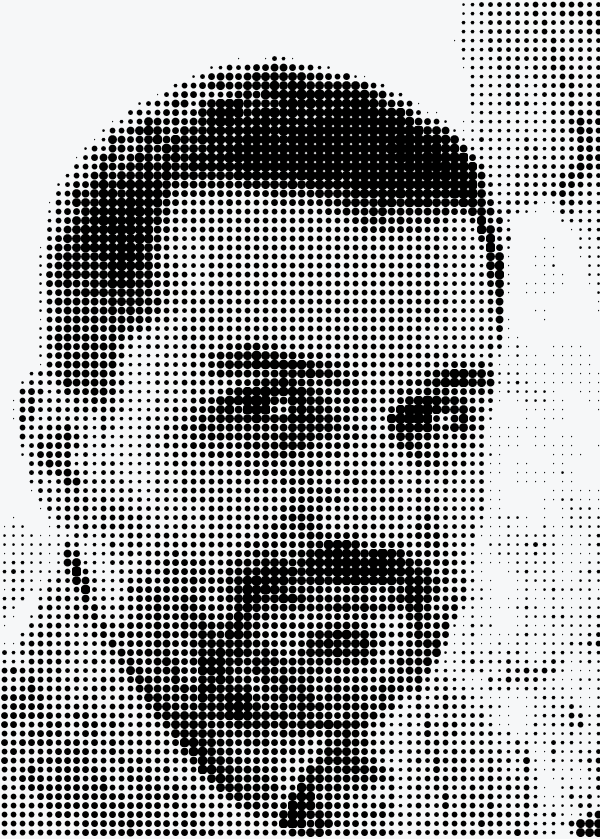
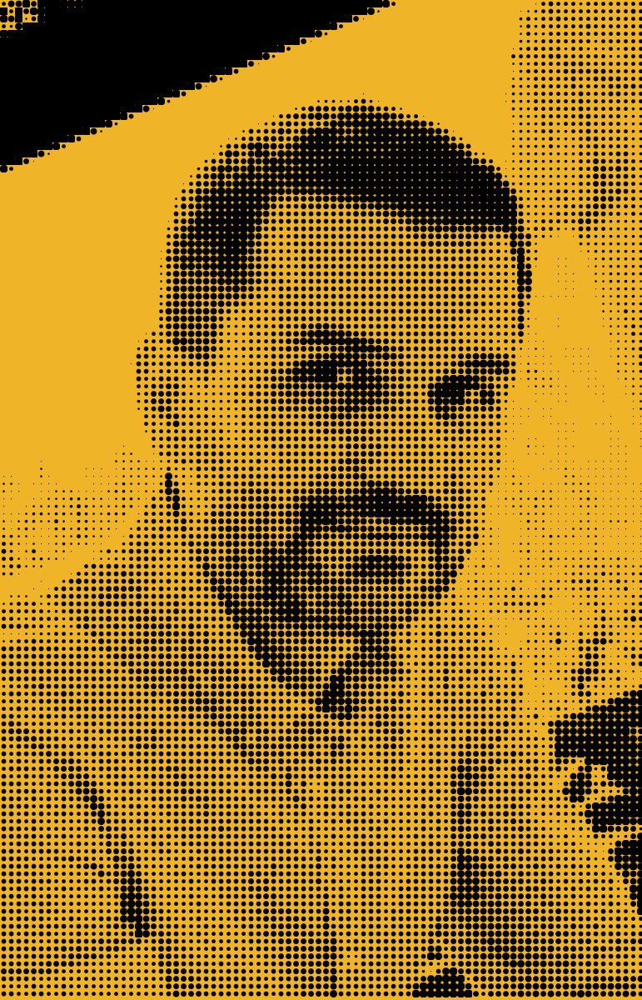
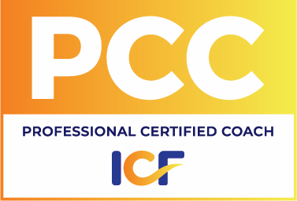
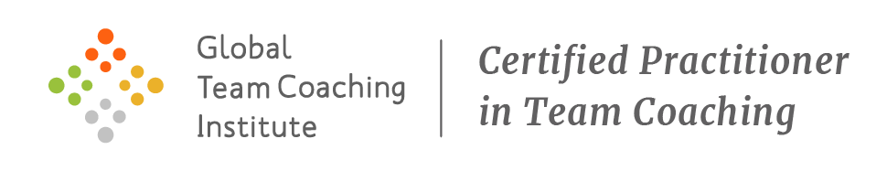
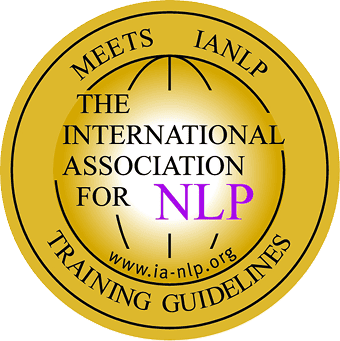

High performers don't break suddenly. They erode gradually — often without noticing, until performance, health, or the person is gone.
Business case (for organizations)
Coaching is not a "nice-to-have." It is measurable performance, resilience, and retention work.
- Studies report average returns of up to 7× the investment in coaching.
- 76% of employees experience burnout at some point (Gallup, 2023).
- Depression and anxiety account for over 12 billion lost workdays per year globally (WHO).
- 22% lower turnover rates among coached employees.
Sources: Gallup 2023, WHO 2023, ICF Employee Burnout Report 2023, Deloitte Wellness Trends 2024.
What I do
I'm active in three main coaching areas. Each with its own process, tools, outcomes, and space to adapt to each client's uniqueness.
Stress & Burnout Coaching
For professionals who are still delivering — but recognize the early signals of strain.
- For: high-performers, leaders, teams in prolonged delivery pressure, any stress prone activity.
- Outcomes: clearer boundaries, improved recovery, reduced irritability, better focus and decisions.
- Method: detect → prevent → sustain (habits + environment + leadership behaviors).
My method
Executive & Leadership Coaching
Better decisions, clearer leadership behavior, less noise, stronger execution.
- For: founders, executives, middle management, high-potentials.
- Outcomes: sharper priorities, stronger communication, conflict navigation, consistent follow-through.
- Focus: thinking quality / critical thinking + leadership presence + stress-resilient performance.
Strengths Coaching (CliftonStrengths)
Turn talent into consistent strengths—then build roles, habits, and teamwork around them.
- For: individuals, leaders, teams that want clarity, energy, and collaboration.
- Outcomes: higher engagement, clearer role fit, better collaboration patterns.
- Tools: CliftonStrengths insights → applied action plan → habit loops + team agreements.
How coaching works
- Session 1: clarify objectives, boundaries, confidentiality, and success criteria.
- Sessions 2–3: diagnose patterns (stress signals, assumptions, behaviors, context).
- Session 4: build a focused plan (experiments, habits, communication moves).
- Sessions 5–6: weekly iterations (what worked / what didn't / what's next).
- Session 7: integration — sustainable routines + measurable progress indicators.
Coaching is not therapy. If clinical support is needed, I refer you appropriately.
Trainings
Three flagship topics. Depth and format are adapted with the client (half-day to two days).
1) Mental Wellness in the Workplace
A practical, stigma-free program to recognize overload early and build team resilience.
- What changes: better self-awareness, healthier boundaries, manager "coach approach."
- Why it matters: poor working environments and excessive workloads increase mental health risk.
- Includes: detection checklists, STOP method, life-balance exercise, resilience routines.
2) Critical Thinking (Business)
Make better decisions under uncertainty: clearer problems, fewer biases, stronger reasoning.
- Tools: problem framing, assumption testing, evidence grading, decision criteria.
- Outcomes: fewer avoidable errors, better alignment, faster decisions with higher quality.
- Use cases: strategy, product, finance, HR decisions, conflict and negotiation.
3) Non-Verbal Communication
Presence, trust, and influence: align what you say with what people actually perceive.
- Focus: posture, eye contact, micro-signals, voice tone, timing, space.
- Outcomes: increased credibility, better leadership signal, fewer misunderstandings.
- Practice-heavy: role plays, feedback loops, real scenarios from your workplace.
Other topics (available on request)
You have additional needs. I keep the homepage focused; in a discovery call we scope the exact agenda, examples, and deliverables.
About
Stamin Daniel
Twenty-five years of business experience across oil and gas, pharma, FMCG, finance, and a dozen other industries. Management consultant, trainer, coach. Probably overqualified to help you, definitely invested in doing it well.


After 14 years of experience training people in behavioral and leadership skills, I'm convinced that one of the most important skills is to stop applying pressure, slow down, and start listening. This insight is reinforced by all my coaching experience.
Over 1,000 hours of one-to-one and team coaching since 2015. I bring the structure of a consultant, the patience of a trainer, and the self-awareness of a recovering perfectionist who is still very much in recovery.
What makes this credible
- Ethics and boundaries (coaching is not therapy; I refer when clinical support is needed).
- ICF-aligned process and continuous professional development in mental well-being.
- Practical tools built from real experience: detection, prevention, integration—usable from the next day.
- 14 years training professionals across industries; I understand the gap between knowing and doing.
Credentials



FAQ
Is coaching the same as therapy?
No. Coaching is forward-focused and action-oriented. I do not diagnose or treat mental illness. If clinical support is needed, I refer appropriately.
How do I know if I'm stressed or burned out?
We assess symptoms and context. Burnout is occupational and typically includes exhaustion, cynicism/mental distance, and reduced efficacy.
How long is a coaching cycle?
Typical individual cycles are 7 sessions. Teams often run 6 sessions of 2–4 hours depending on group size and goals.
Do you work with companies?
Yes—leadership coaching, team coaching, and trainings (4–16 hours). We define scope, success criteria, and confidentiality boundaries upfront.
Where do sessions happen?
Online or in-person (Bucharest). For corporate work: on-site or online.
What's the fastest first step?
Book a short call. We clarify the problem, desired outcomes, and the simplest plan that creates momentum.
What languages do you coach in?
Romanian, English, and German. Sessions, contracts, and written materials are available in all three.
What does a typical session look like?
Sessions are 60–90 minutes. We start from where you are—what happened since last time, what shifted, what is still stuck. I ask questions that make it hard to stay vague. You leave with one or two clear moves, not a long list.
Is everything confidential?
Yes. Confidentiality is a core part of the coaching agreement—on my side it is unlimited in time. For organizational mandates, we define the reporting boundaries at the start, and they are explicit in the contract.
The DROP
Published on Substack. Articles on stress, leadership, performance, and clear thinking — for people who prefer substance over inspiration quotes.
Book a session
Select a time that works for you. Individual sessions run 50 minutes. The first session includes context-setting at no extra charge.
For corporate programs and team coaching, reach out by email — scope and format are better defined in a short conversation first.
The goal is not to recover enough to go back to what broke you.
If you want to understand what is happening and build something more sustainable — start with a 30-minute call. No cost. No commitment.
GDPR note: contact data is used only to respond to your request and is not sold or shared.